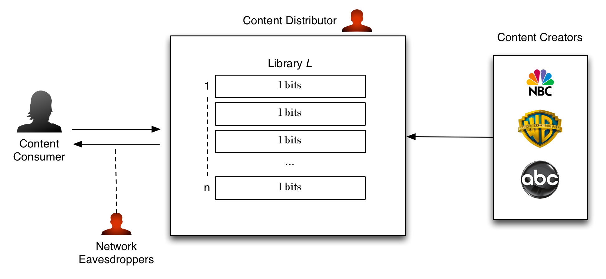
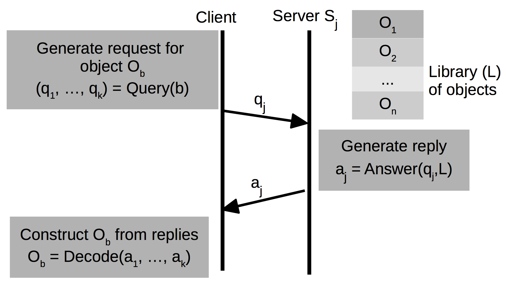
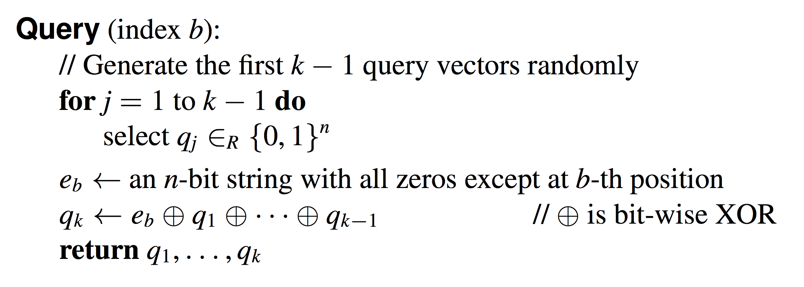
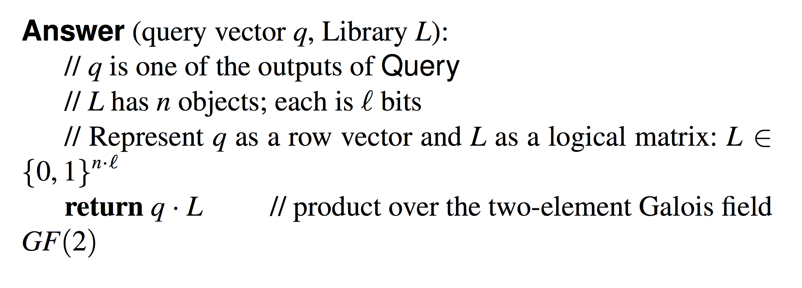
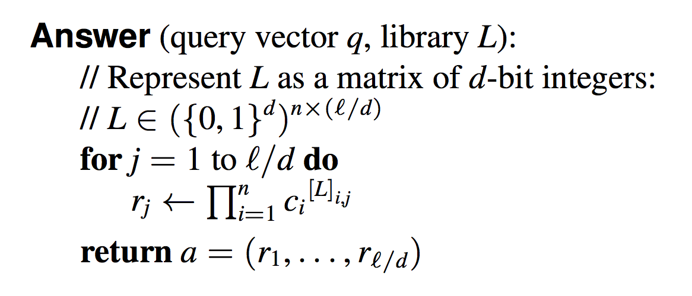
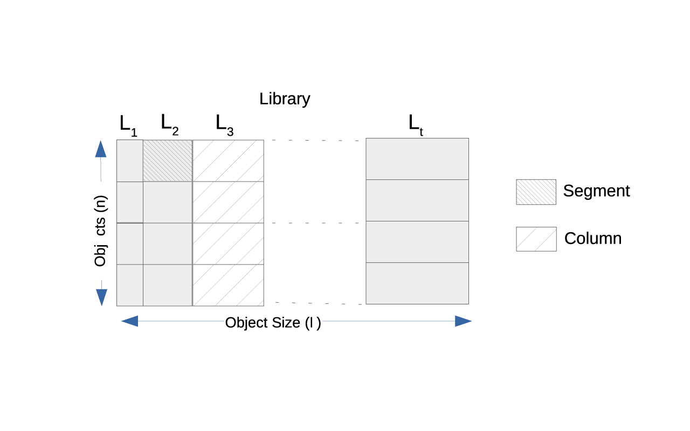
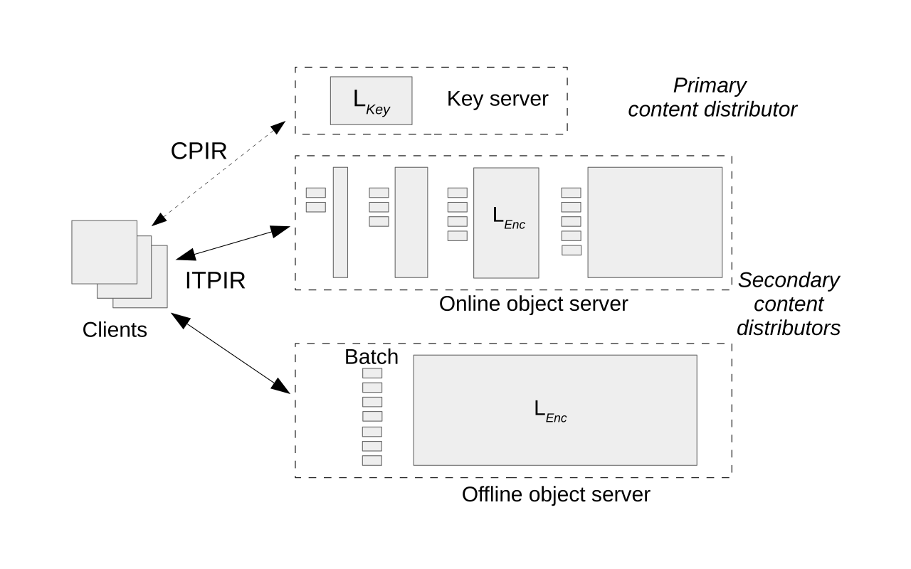

Popcorn
Scalable and private media consumption with Popcorn
Trinabh Gupta / Natacha Crooks / Srinath Setty / Lorenzo Alvisi / Michael Walfish
UT Austin / MPI-SWS / Microsoft Research / NYU
Created by Keylor Chaves / @keylorch
Scenario

Private Information Retrieval (PIR)
k servers
Popcorn Strategy
- Combines two types of PIR: ITPIR and CPIR
- Requests batching
- Offline Work
Information-theoretic PIR (ITPIR)
Multi-server PIR protocols. k > 1.
Each k needs to belong to different administrative domains
Chor-Goldreich-Kushilevitz-Sudan (CGKS) ITPIR Protocol
(CGKS) ITPIR Protocol

k: number of servers
n: size of the library
L: Library
l: size (bits) of each object in L
(CGKS) ITPIR Protocol

k: number of servers
n: size of the library
L: Library
l: size (bits) of each object in L
(CGKS) ITPIR Protocol
k: number of servers
n: size of the library
L: Library
l: size (bits) of each object in L
Computational PIR (CPIR)
Commonly constructed using additively homomorphic cryptosystems. k = 1
k: number of servers
n: size of the library
L: Library
l: size (bits) of each object in L
Computational PIR (CPIR)

k: number of servers
n: size of the library
L: Library
l: size (bits) of each object in L
Computational PIR (CPIR)
k: number of servers
n: size of the library
L: Library
l: size (bits) of each object in L
Challenges of using PIR
ITPIR
- Requires multiple non-colluding servers
- All servers combined must compute over n objects to serve one on them on average
CPIR
- Requires expensive cryptographic operations
- The server must load and process all n objects in L
Each query induces O(n) more work
Popcorn Architecture
Popcorn Architecture
Content Retrieval Protocol
- A client retrieves the object's decryption key from the key server using CPIR
Content Retrieval Protocol
- Retrieves the encrypted object (via segments/chunks) from the object servers using ITPIR
Composing ITPIR and CPIR
- CPIR is not a performance bottleneck (small keys)
- Current controls on content protection are respected (m is stored only at the primary content distributor)
Pending: Overhead of ITPIR: uses XOR, but needs to read n/2 segments on average
Batching
- The server can amortize the cost of reading a column over a batch of queries
- q . L can be replaced by Q . L where Q is a matrix whose rows are query vectors
Specializing batching for media delivery
- A client's initial delay is given only by the time it has to wait before it can download the first segment.
- Other segments are not needed until later and can afford higher processing times.
- We need to choose, for each column, the longest possible processing cycle, such that users perceive a low initial delay d and that the movie is played back smoothly
Popcorn Architecture
Moving work offline
Limitation: Given that d is small, the batch sizes for these columns are also small, and the per-request I/O is high
- Only qk depends on b
- We can compute the reply to the first k - 1 query vectors offline
Moving work offline
First time Popcorn users: Generate a configurable number m of random query vectors, which are sent to the offline server.
The server precomputes (and stores locally) replies for these query vectors.
Evaluation results
- The per-request dollar cost in Popcorn is less than three times the per-request dollar cost in a system without privacy.
- 80% of the per-request cost in Popcorn is the cost of transferring data over the network
- Popcorn requires large objects and many concurrent clients to effectively reduce costs.
ITPIR Implementation
Information available at
Paper:
https://eprint.iacr.org/2015/489.pdf
Presentation:
http://keylorch.github.io/cs616-paper-presentation/
ITPIR Code Example:
http://bit.ly/1QqViab
Popcorn
Scalable and private media consumption with Popcorn
Trinabh Gupta / Natacha Crooks / Srinath Setty / Lorenzo Alvisi / Michael Walfish
UT Austin / MPI-SWS / Microsoft Research / NYU
Created by Keylor Chaves / @keylorch